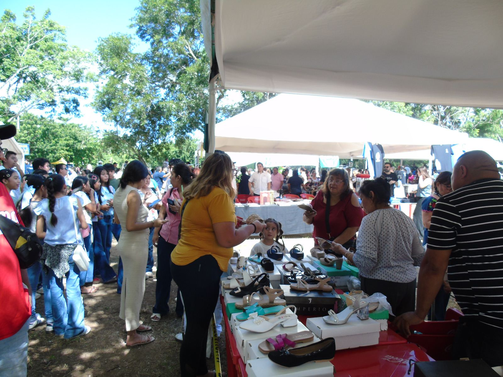
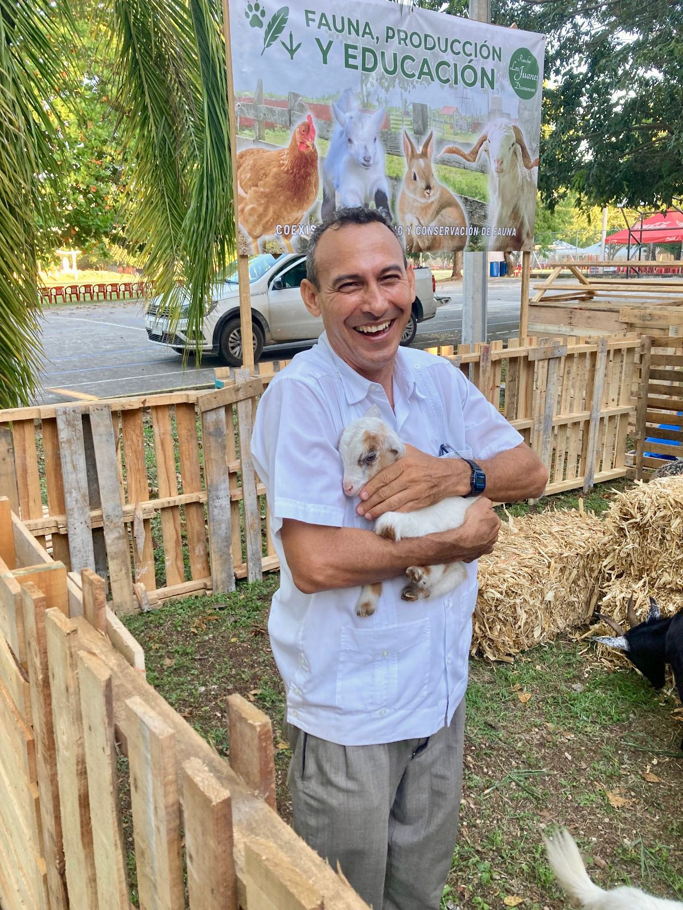
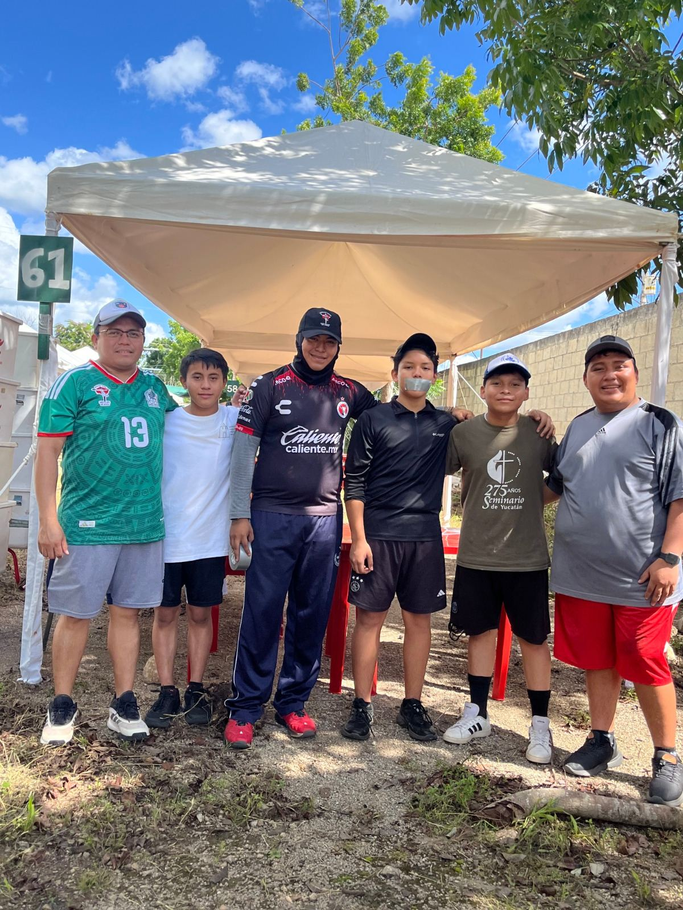
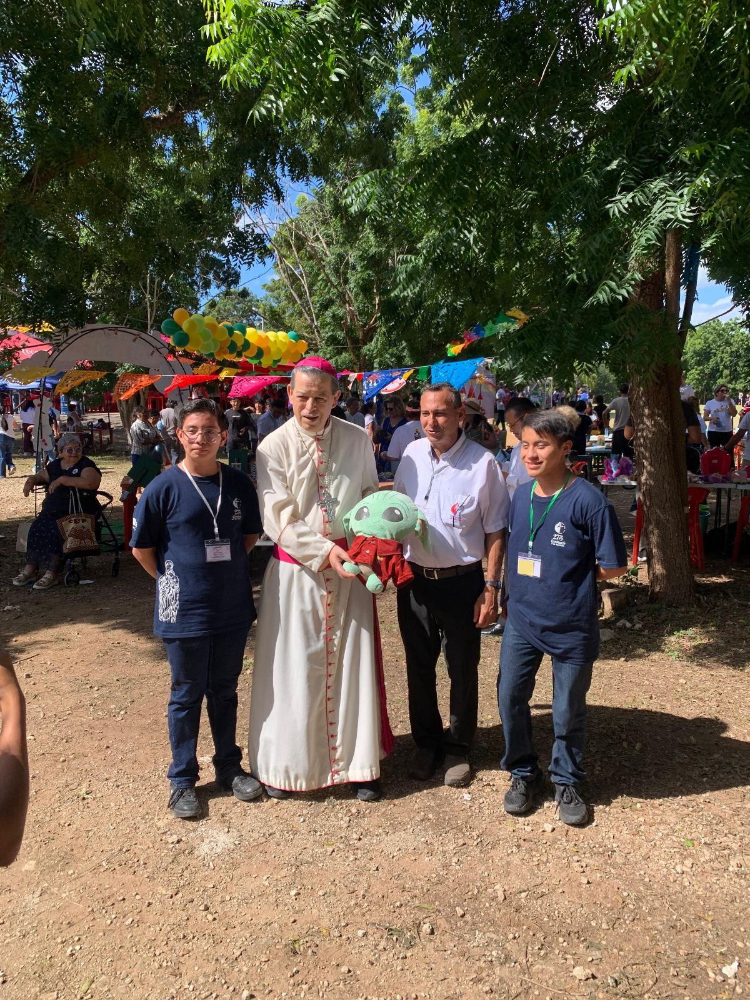
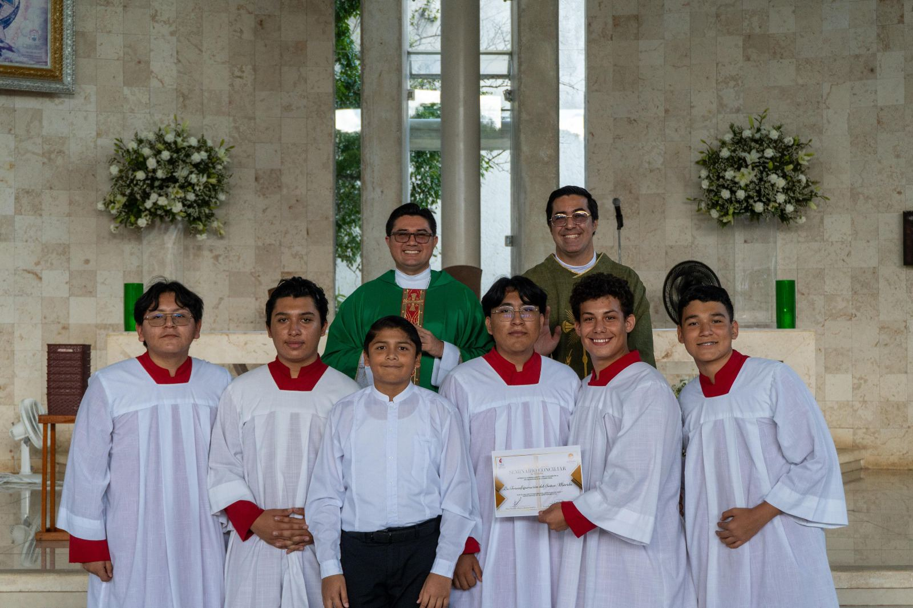
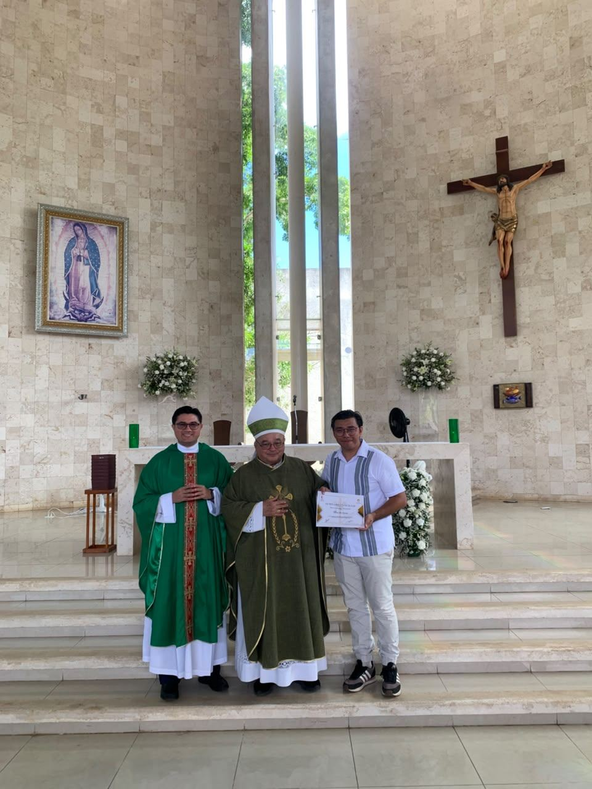
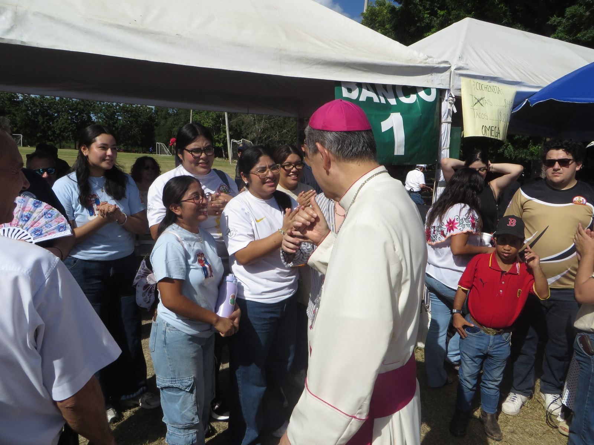
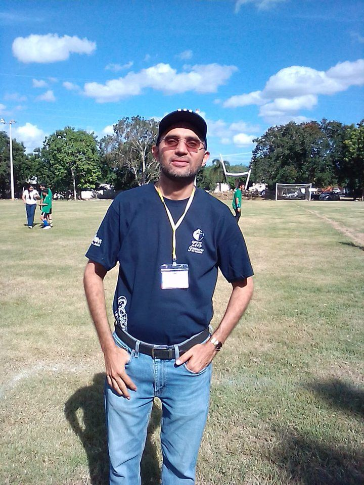
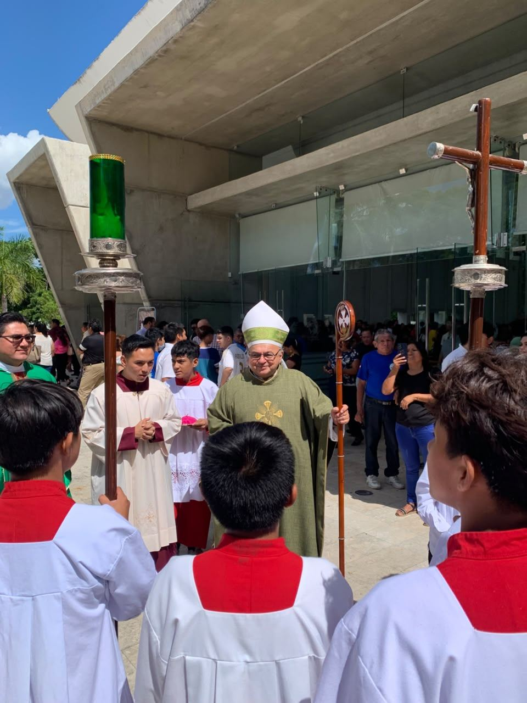

Inicio / Actividades
Actividades del Seminario
A través de nuestras actividades buscamos fortalecer nuestra comunidad, compartir la alegría de nuestra vocación y acercarnos a las familias y parroquias de la Arquidiócesis de Yucatán.
Una tradición que nos une desde 1994
Desde 1994 celebramos nuestra tradicional Súper Kermés del Seminario Menor, una fiesta familiar que tiene lugar en las instalaciones del Seminario Menor San Felipe de Jesús y que es organizada por el Seminario Conciliar de Yucatán. Con esta celebración buscamos recaudar fondos para apoyar la formación de los jóvenes que se preparan para la vida sacerdotal, y abrimos nuestras puertas para compartir un espacio de convivencia con las familias y la sociedad yucateca.
Ofrecemos una gran variedad de actividades para todas las edades: comida típica regional, antojitos mexicanos, juegos mecánicos, inflables, espectáculos artísticos, música en vivo, concursos y torneos deportivos infantiles y juveniles. Para nosotros, esta celebración es una muestra de solidaridad y colaboración, donde cada persona que participa contribuye a la formación de nuestros futuros sacerdotes.
Apoya esta actividad
Una fiesta para descubrir las vocaciones
En nuestro Seminario Mayor organizamos el Vocafest, una fiesta de las vocaciones en la que invitamos a niños, jóvenes y familias a acercarse a nuestra comunidad y conocer las distintas formas de vivir y servir a Dios dentro de la Iglesia católica. A través de música en vivo, rallys juveniles, torneos deportivos, exposiciones vocacionales y una verbena con puestos de comida, creamos un ambiente de convivencia y encuentro.
Durante esta celebración, los asistentes tienen la oportunidad de acercarse a sacerdotes, seminaristas y religiosas, escuchar sus experiencias y descubrir las diferentes vocaciones que existen dentro de la Iglesia. Además de promover el discernimiento vocacional, el Vocafest nos permite reunir fondos mediante donativos y la venta de alimentos, contribuyendo al sostenimiento y la formación de nuestros seminaristas.
Conoce la ruta de formación

Nuestra vida dentro del Seminario
A lo largo del año realizamos diferentes actividades que fortalecen nuestra identidad, nuestra espiritualidad y la convivencia entre quienes formamos parte de esta comunidad.

Informe del rector
Celebramos la misa de invocación del Espíritu Santo y el informe anual del rector sobre la vida del Seminario.

Círculos vocacionales
Espacios de encuentro y acompañamiento entre quienes disciernen su vocación sacerdotal.

Acción de gracias
El aniversario de las Oblatas y la misa de acción de gracias por la Súper Kermés renuevan nuestro compromiso comunitario.
Nuestra misión más allá del Seminario
También participamos en actividades que nos permiten salir al encuentro de las comunidades y compartir nuestra fe con la sociedad: la fiesta patronal de Nuestra Señora del Rosario, los Jueves Sacerdotales, la vaquería en su honor, la Semana de la Cultura Vocacional, el concurso de villancicos y las misiones de Semana Santa.

Jueves Sacerdotales
Encuentros que fortalecen los lazos entre el Seminario y el presbiterio de la Arquidiócesis.
Semana de la Cultura Vocacional
Actividades que acercan a las parroquias a la vida y misión de nuestros seminaristas.

Misiones de Semana Santa
Seminaristas y sacerdotes llevan la misión del Seminario a distintas comunidades de Yucatán.
Cómo llegamos a cada comunidad
Nuestra misión no se queda dentro de las instalaciones del Seminario. Buscamos estar presentes en las distintas parroquias y comunidades de la Arquidiócesis, compartiendo nuestra experiencia vocacional y fortaleciendo los lazos con la Iglesia local.
Hermanos sacerdotes
Son un vínculo fundamental para mantener nuestra presencia en las parroquias y acercar el trabajo del Seminario a las comunidades.
Seminaristas
Mediante su presencia y servicio, comparten su experiencia de formación y participan en la vida de las comunidades.
Pastoral Vocacional
Impulsa retiros, encuentros y actividades que ayudan a los jóvenes a conocer y discernir su posible vocación.
Medios de comunicación
Utilizamos la radio, la prensa y la televisión para compartir nuestras actividades y dar a conocer nuestra misión.
Seminario Mayor y Seminario Menor

Seminario Mayor — Itzimná
En nuestro Seminario Mayor, buscamos que cada seminarista viva un encuentro profundo y auténtico con Cristo y con sus hermanos, mediante la vida fraterna, el estudio teológico, la oración y las experiencias pastorales que atraviesan las etapas Discipular y Configurativa.
Seminario Menor — San Felipe de Jesús
Aquí nuestros jóvenes de preparatoria viven una etapa de descubrimiento y crecimiento vocacional, compartiendo experiencias de estudio, deporte, oración y fraternidad en las etapas SEM-FAM y Seminario Menor.
Vive de cerca la vida del Seminario
Síguenos en nuestras redes sociales y entérate de nuestras próximas actividades.